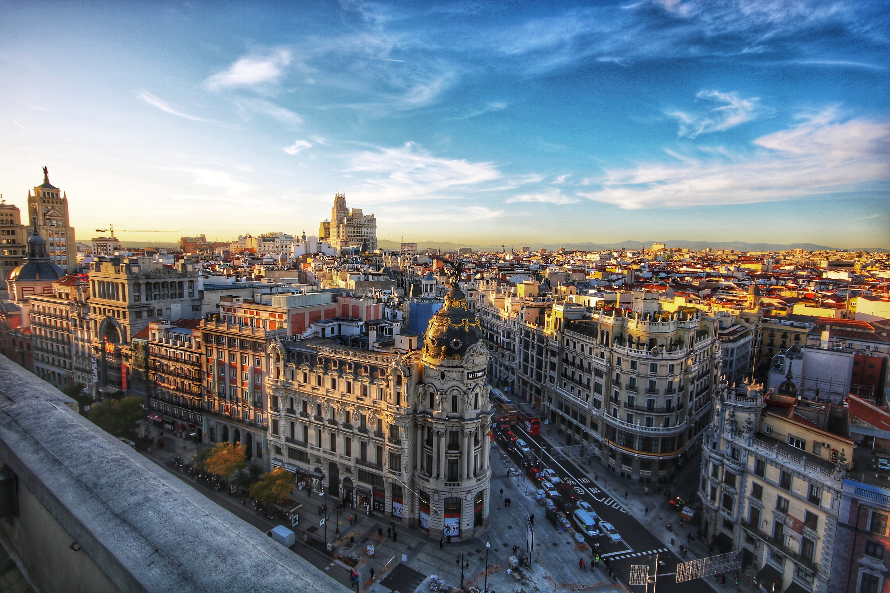
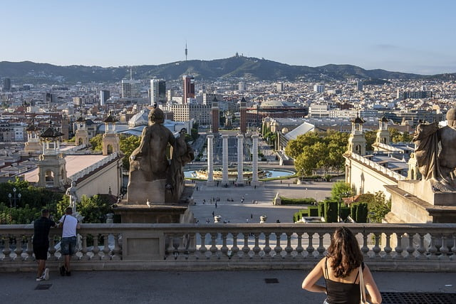

Hallo! Ich heiße AnzgarCoM und interessiere mich sehr für Spanien.
Ich liebe die Kultur, das Essen und den Fußball.
Außerdem finde ich Städte wie Madrid, Barcelona oder Sevilla sehr spannend.
Hallo! Ich heiße AnzgarCoM und interessiere mich sehr für Spanien.
Ich liebe die Kultur, das Essen und den Fußball.
Außerdem finde ich Städte wie Madrid, Barcelona oder Sevilla sehr spannend.

Spanien ist ein wunderschönes Land im Südwesten Europas. Es bietet traumhafte Strände, beeindruckende Städte und eine reiche Kultur.
| Stadt | Einwohnerzahl | Foto & Links(Klick auf das Bild) |
|---|---|---|
| Madrid | 3,2 Millionen |  |
| Barcelona | 1,6 Millionen |  |
| Sevilla | 700.000 |  |
Spanien hat viele leckere Gerichte! Hier sind einige typische Speisen, die du ausprobieren kannst:
Klick auf die Bilder um zu den Rezepten zu gelangen
Besonders bekannt sind Real Madrid und FC Barcelona.